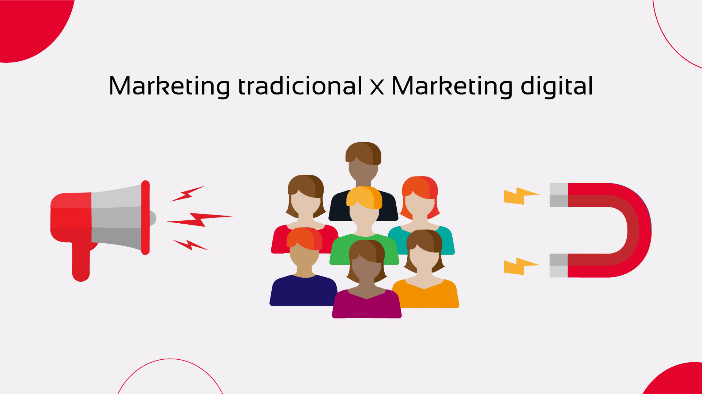

Marketing Digital.
O que é, e suas principais estratégias
Marketing
Marketing Digital.
O que é, e suas principais estratégias
Marketing Digital nada mais é do que o conjunto de ações que podem ser feitas no ambiente digital com o objetivo de promover empresas e produtos. Essas táticas são implementadas por meio de canais como SEO, mídia paga, sites, redes sociais, e-mail e seus principais objetivos são: adquirir clientes, desenvolver uma marca e se conectar com o público-alvo.
Neste post você vai aprender o conceito de marketing digital, entender os motivos que o levaram a ser tão importante para a atualidade e quais as principais e mais bem sucedidas estratégias de marketing digital.
E para começarmos a falar sobre, vamos primeiro entender o seu significado!
O que é marketing digital?
Hoje em dia, a internet está presente em nossa vida de uma maneira que se torna quase impossível fazer qualquer coisa sem ela. Coisas simples como obter o telefone de um restaurante, e até coisas complexas, como realizar pesquisas com o público, quase tudo passa pela internet.
Por isso, e com o fácil alcance da internet, é cada vez mais difícil ver pessoas desconectadas de seus celulares e computadores. E se nossa vida já mudou tanto depois do surgimento da internet, o mesmo se pode afirmar da jornada de compra.
É costume procurarmos por produtos e serviços que queremos na internet, seja para buscar informações e feedbacks sobre determinado produto ou, seja para pesquisar os melhores preços, ou mesmo descobrir mais sobre um problema que temos.
E é aí que entra o marketing digital, que nada mais é do que um conjunto de estratégias que podem ser feitas em ambiente digital com o objetivo de promover empresas, marcas e pessoas.
A importância do marketing digital
Coma evolução das tecnologias e o aumento do alcance da internet os limites de como e onde atingir o consumidor tornaram-se ainda mais difíceis de se enxergar. Hoje é praticamente impossível se livrar da influência do marketing, de suas ferramentas e argumentos.
No passado quase a todas as informações que poderíamos obter sobre produtos e serviços estava na mão das empresas que ofereciam essas soluções. Logo o cliente ficava limitados em relação a suas opções de compra, e o vendedor, que era uma das únicas fontes de informação, não traria a ele informações imparciais. Os limites de como o cliente agiria e para onde ele iria eram bem mais claros para ambos os lados. O marketing tradicional busca chamar o cliente para adquirir algum produto ou serviço.
Mas hoje, o cliente segue o caminho oposto, a internet o permite ter uma participação mais ativa no processo, agora todas as informações que ele deseja estão facilmente em suas mãos, aliadas a inúmeras possibilidades de produtos, o que significa que o cliente inicia sua jornada de compra antes mesmo de se quer entrar em contato com um vendedor. O marketing digital busca atrair o cliente para a compra ao invès de so dizer a ele pra comprar aquele produto ou serviço.

Por isso é crucial que a empresa busque construir uma relação com o cliente, em meio a tantas possibilidades essa conexão será o diferencial necessário para que o cliente escolha a o seu produto.
O Marketing digital torna possível o acompanhamento da jornada de compra do consumidor, e é a partir de suas estratégias que conseguimos guiar o público-alvo, para que ele chegue aonde desejamos.
Vantagens do marketing digital:
- Investimento mais baixo do que na mídia tradicional;
- Facilidade de mensuração dos resultados;
- Maior possibilidade de alcance das ações do que no marketing off-line, impactando um número maior de pessoas;
- Possibilidade de realizar ações mais direcionadas ao público que se quer atingir;
- Mais interação e conexão com o público-alvo, em tempo real.
- Conquistar uma presença online para ser encontrado
- Acompanhamento da jornada de compra
- Aumento de vendas
- Fortalecimento da marca
Principais estratégias do marketing digital
Existem inúmeras estratégia aplicáveis para o marketing digital, mas hoje iremos falar das 3 principais, aquelas estratégias e técnicas que se destacam por serem usadas pela grande maioria e trazerem normalmente resultados positivos. São elas:
- Marketing de conteúdo
- Marketing de busca - SEM;
- Redes sociais.
Marketing de conteúdo
O Marketing de Conteúdo, tem como objetivo atrair o cliente por meio de conteúdo relevante. A empresa busca entender as necessidades dos consumidores para em seguida estabelecer um canal de comunicação com eles, onde irá oferecer uma solução para todos esses problemas. O objetivo principal dessa estratégia é ajudar o consumidor, dessa forma ele encontra, gosta e se relaciona com a sua marca, empresa ou produto.
Hoje quando queremos resolver algo ou precisamos de alguma informação vamos direto para o Google, não é? A procura de auxílio. É justamente aí que o Marketing de Conteúdo entra em ação! Com a sua empresa está esclarecendo as dúvidas sobre assuntos de interesse do seu público-alvo os seus conteúdos irão aparecer para ele durante a pesquisa e assim você trará para o seu site e mídias sociais, possíveis compradores em potencial.
Marketing de busca – SEM
Após implantar o Marketing de Conteúdo e elaborar materiais interessantes para o seu público constantemente, você precisa fazer com que esse conteúdo publicado seja encontrado. É para isso que existe essa estratégia, o SEM (Search Engine Marketing), mais conhecido como Marketing de Busca!
Fazer Marketing de Busca é, basicamente, otimizar, melhorar e ajustar uma página para que ela possa encontrada mais facilmente pelas ferramentas de busca, como o Google ou o Bing, quando alguém procurar por algo relacionado a esse conteúdo.
Essa estratégia tem como principal objetivo fazer com que o seu conteúdo esteja posicionado da melhor maneira possível quando alguém buscar por ele, ou seja, na primeira página dos resultados de busca, pois a grande maioria dos consumidores clicam apenas em conteúdos que aparecem nela.
Redes sociais
Atualmente há várias vantagens que fazem com que as empresas estejam presentes nas mídias sociais. A primeira delas é o alto número de usuários presentes nas mídias sociais, somente no Instagram, por exemplo, existem cerca de 1 bilhão de usuários, e as chances de você encontrar clientes dentre esses usuários é alta.
Essa significativa presença de usuários torna as mídias sociais um importante canal de comunicação entre as empresas e os seus consumidores. Além disso, as redes sociais são a principal estratégia para a promover a sua marca, La você obtém influência, divulga seus produtos e seu propósito, e aproxima a sua comunicação com o público-alvo.
O potencial desses canais é imenso. Afinal, abre portas para uma conexão mais próxima com os seus clientes. Mas é preciso saber criar estratégias para não só captar audiência para esses espaços, mas também para retê-la e engajá-la!
Conclusão
Eu espero que esse guia tenha expandido um pouco a sua visão e lhe mostrado que o marketing digital é uma frente do Marketing bem completa e que já possui diversas formas de aplicação.
Recapitulando o que aprendemos:
O Marketing Digital é o conjunto de ações que uma marca realiza através do ambiente digital, e suas principais estratégias são: Marketing de Conteúdo; Marketing de busca – SEM e Marketing nas Redes Sociais!
É isso, agora você já sabe por onde começar para impulsionar o seu negócio!
Por Marina Martins
Estagiária de Martketing
Impulse
Em 01/10/2021